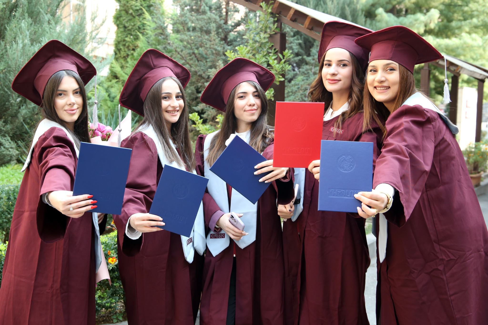
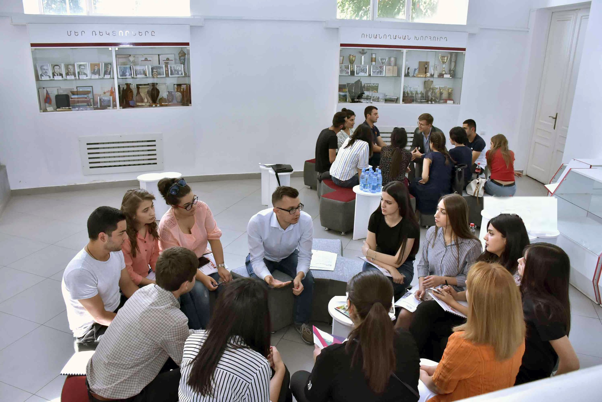
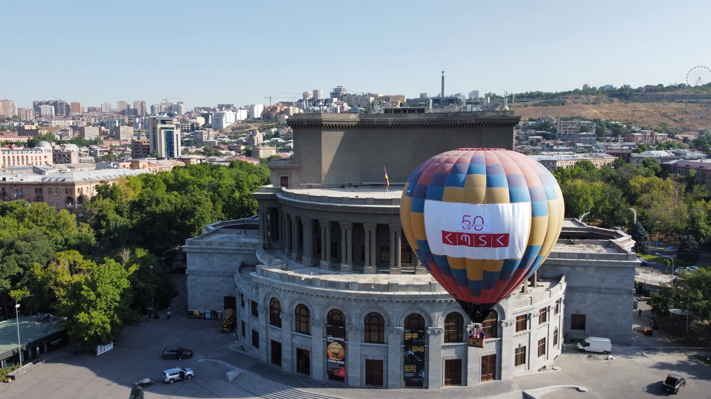
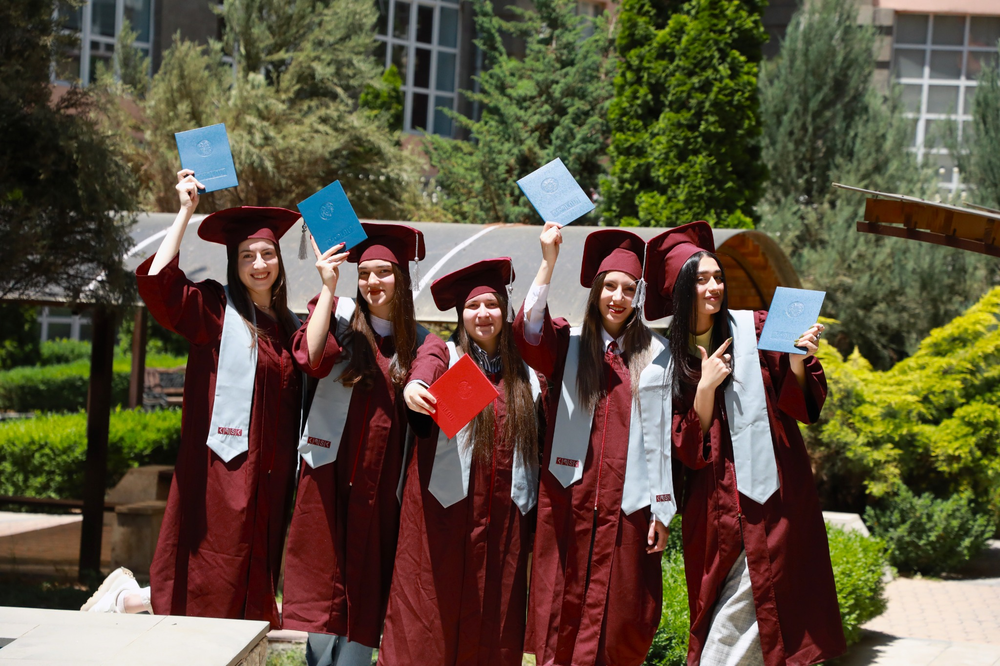
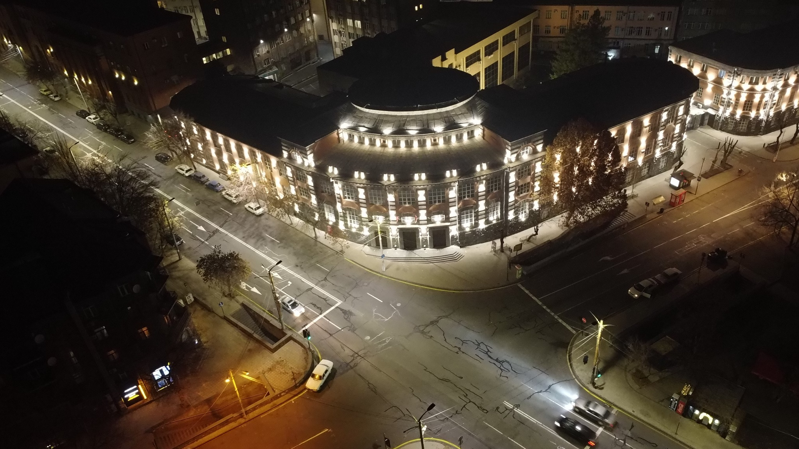
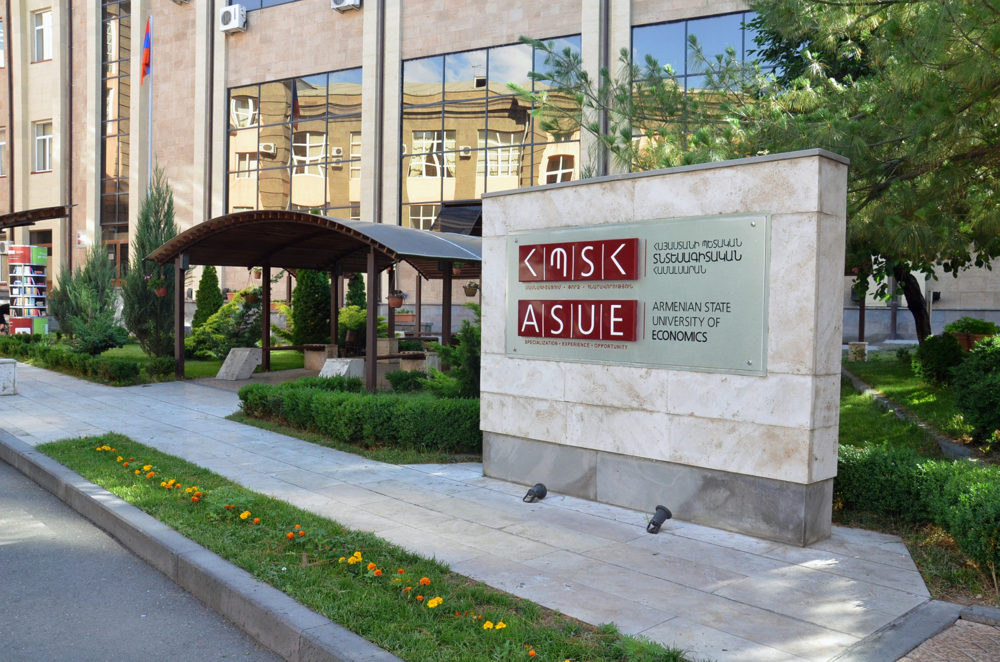

01
Բակալավրիատ
Հիմնարար գիտելիք, կիրառական հմտություններ և մասնագիտական կողմնորոշում առաջին իսկ կուրսից։
Տեսնել ծրագրերըԺամանակակից տնտեսագիտական կրթություն, կիրառական հետազոտություն և միջազգային համագործակցություն՝ մեկ ուժեղ համալսարանական համայնքում։
ՀՊՏՀ-ն միավորում է կրթությունը, գիտությունը և բիզնես միջավայրի հետ գործնական կապը՝ ձևավորելով մասնագետներ, որոնք կարողանում են հասկանալ փոփոխվող տնտեսությունը և ստեղծել արժեք։
Մեր համալսարանական փորձը կառուցված է ընտրության շուրջ՝ մասնագիտական ծրագրեր, հետազոտական նախաձեռնություններ, միջազգային շարժունություն, կարիերայի զարգացում և ակտիվ ուսանողական կյանք։
Բացահայտել ՀՊՏՀ-նԸնտրեք կրթական մակարդակը և ուղղությունը՝ տնտեսագիտությունից ու ֆինանսներից մինչև կառավարում, մարքեթինգ, հաշվապահություն և թվային տնտեսություն։
Հիմնարար գիտելիք, կիրառական հմտություններ և մասնագիտական կողմնորոշում առաջին իսկ կուրսից։
Տեսնել ծրագրերըԽորացված մասնագիտացում, հետազոտական աշխատանք և կապ ոլորտային փորձագետների հետ։
Տեսնել ծրագրերըԳիտական հետազոտություն և ակադեմիական կարիերայի զարգացում տնտեսագիտական ուղղություններով։
Գիտական ուղիԿարճաժամկետ ծրագրեր և մասնագիտական վերապատրաստում փոփոխվող աշխատաշուկայի համար։
Իմանալ ավելինՀՊՏՀ-ում հետազոտությունը կենտրոնանում է Հայաստանի տնտեսության, ֆինանսական համակարգերի, կառավարման, հանրային քաղաքականության և տարածաշրջանային զարգացման արդիական խնդիրների վրա։ Ուսանողները ներգրավվում են գիտական նախագծերում և աշխատում դասախոսների ու ոլորտային գործընկերների հետ։

ՀԱՄԱՅՆՔ · 08.08.2026Ամփոփում ենք ավարտական շրջանի կարևոր պահերը և մեր շրջանավարտների ձեռքբերումները։
Կարդալ
ԿՐԹՈՒԹՅՈՒՆ · 05.08.2026Գործնական նախագծերը և ոլորտային համագործակցությունը ավելի մեծ տեղ են զբաղեցնելու ծրագրերում։
Կարդալ
ՀԱՄԱԼՍԱՐԱՆ · 01.08.2026Միջոցառումներ, հանդիպումներ և պատմություններ, որոնք միավորում են սերունդներին։
ԿարդալՄիջազգային գործընկեր համալսարանների հետ ուսանողական և դասախոսական շարժունությունը, համատեղ ծրագրերն ու գիտական կապերը հնարավորություն են տալիս ՀՊՏՀ համայնքին աշխատել միջազգային միջավայրում։
Ակտիվ համայնք, ակումբներ, միջոցառումներ, կարիերայի հնարավորություններ և միջավայր, որտեղ ձևավորվում են մասնագիտական ու մարդկային կապեր։


